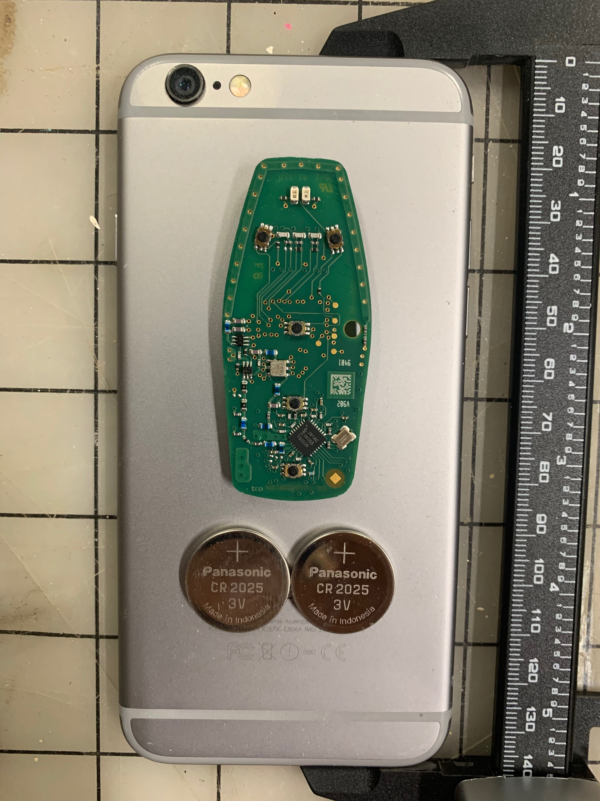
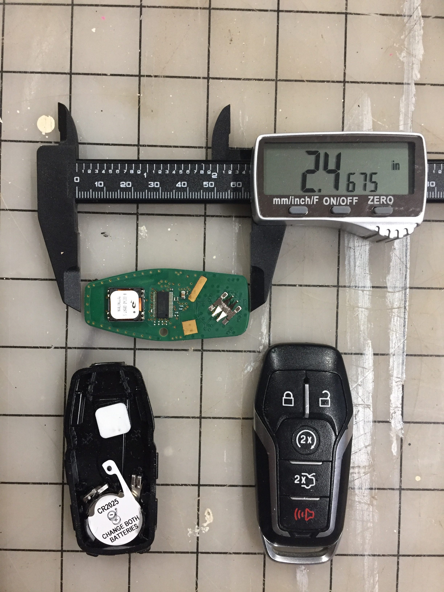
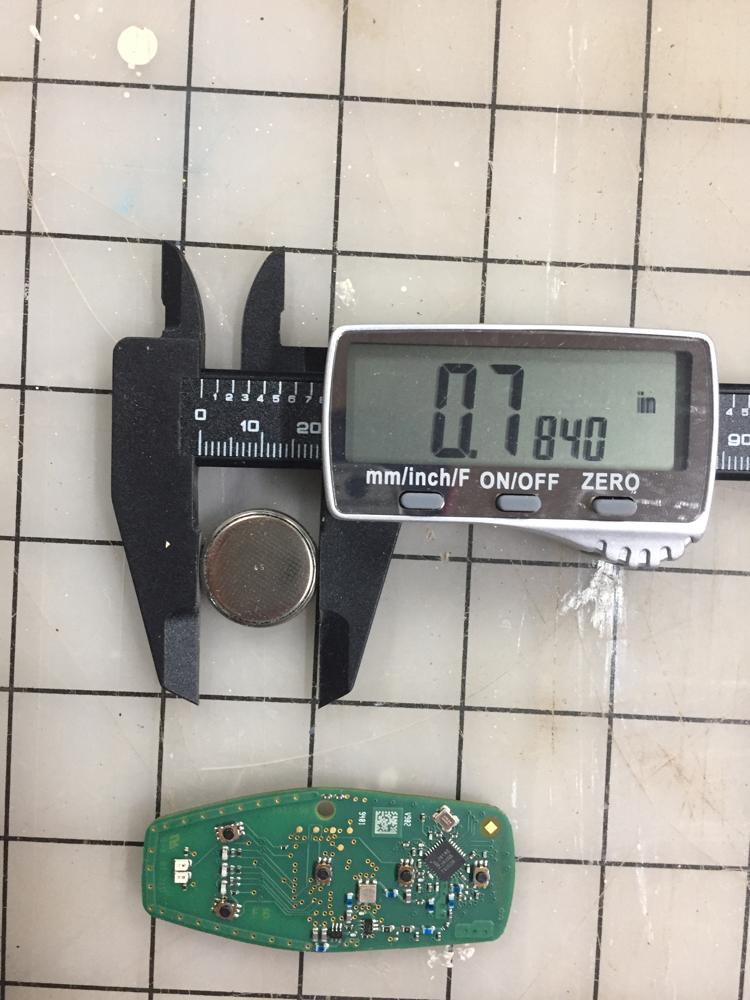
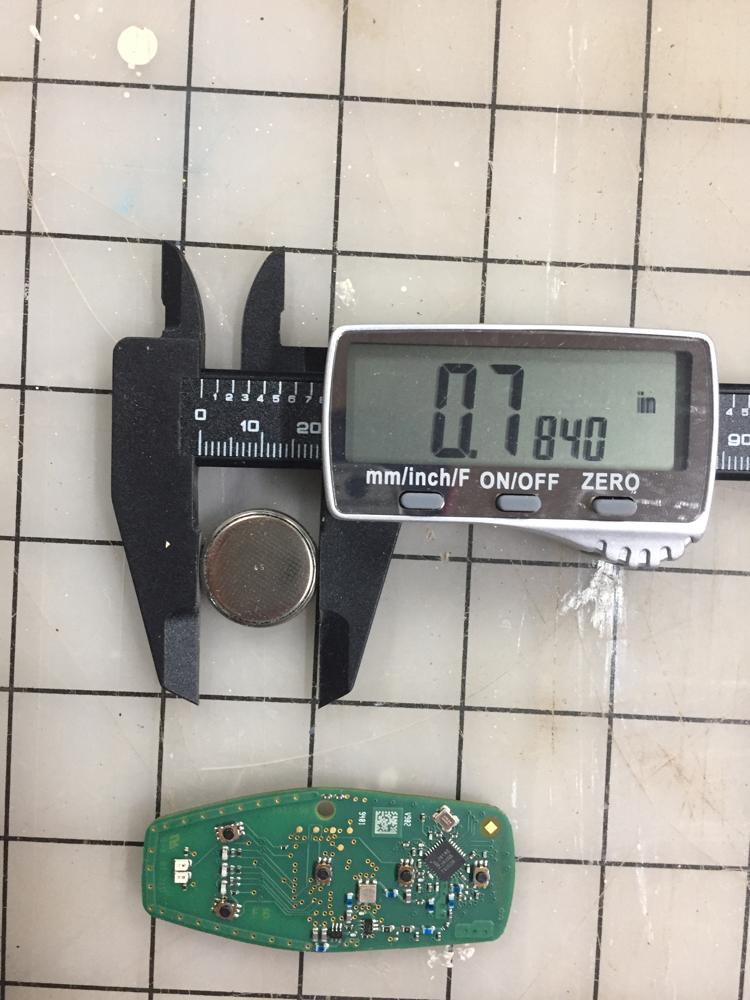

2D Design & Cutting
Things I've done and learned since the last Zoom:
This week I have spent an embarrassing amount of time learning how to set up this web site/pages with html!
I have experienced much trial and error since last Thursday's Zoom session. The backbone of the coarse web page is now set up. I have loaded some
photos and set up links for each class. The links from the third class forward are simply a copy and paste of a previous class link, but will be
undated as we progress.
I have also made some slight inprovements to the nail configuration of the hotdog cooker prototype. With the original version (made last week),
the ends of the dog did not get hot. With the new version the nail stick into the ends of the weenie. Therefore, current flows throught the entire
lenght of the hotdog. This give more uniform cooking.
I also signed up for a free student version of Fusion 360. This took several attempts; the first two submissions Autodesk rejected my approval for
student account. The third attempt was approved! However, Fusion 360 would not run on my iOs. So downloaded macOS Catalina version 10.15.5.
With Fusion 360, I'm planning to measure and draw the circuit board and batteries inside the key fob for my Ford Explorer. As a possible side project, I'm planning to mold a protective cover for my iPhone that will house the fob circuit board and batteries. This Ford has the typical set up for late model cars that does not require the use of a traditional key to unlock the doors or start the car. As long as the fob is on the operator's person the car allows access and can be started with a button on the dash. I will attach a few pictures of the board, batteries and my iPhone below. These will be the items I will measure/draw in Fusion 360.
Return to my home page.
iPhone 6 with board and batteries:
Key fob circuit board:
Key fob battery (one of two):
 
